Hizmet hakkında
Kapınız kapalı kaldığında sakin ve güvenli çözüm
Anahtarın içeride unutulması, kilidin dönmemesi ya da kapının aniden kapanması günün en beklenmedik anında yaşanabilir. Bahçelievler kapı açma servisimizde önce kapının ve kilidin durumunu değerlendiriyor, uygun yöntemi sizinle paylaşarak işe başlıyoruz.
Amacımız, ev veya iş yeri kapınızı gereksiz yere zorlamadan erişiminizi yeniden sağlamak. Kilitli kapı açma ihtiyacınızda telefonla bize ulaşarak adres ve kapı türü hakkında bilgi verebilirsiniz.
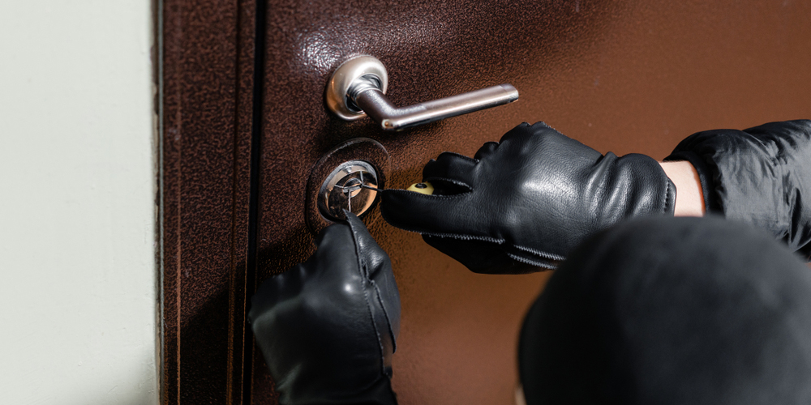
Anahtar içeride mi kaldı?
Anahtar içeride kaldıysa ya da anahtarınızı kaybettiyseniz kapıyı zorlamak yerine profesyonel destek alın. Kapı tipi, kilit mekanizması ve mevcut arızaya göre en uygun kapı açma yöntemini belirliyoruz. Böylece hem kilidi hem de kapı çevresini korumaya özen gösteriyoruz.
Bahçelievler acil çilingir desteğimiz; daire, apartman ve iş yeri kapılarında, müsaitlik durumuna göre günün farklı saatlerinde hizmet verir.
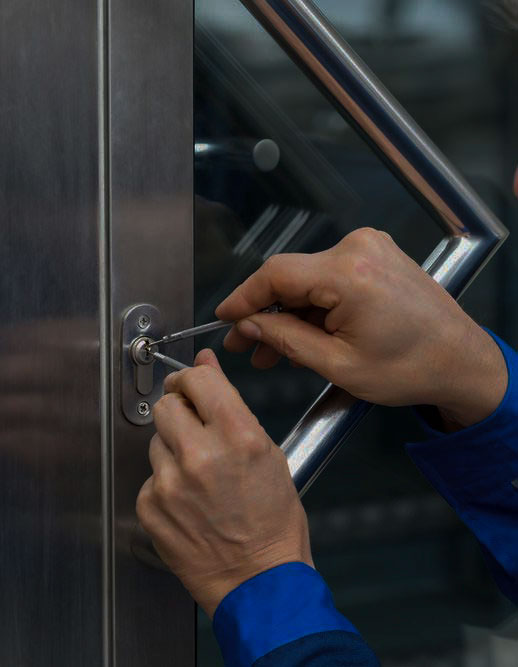
Özenli müdahale, açık iletişim
Kapıya zarar vermeden açma, kilidin yapısına ve arızanın türüne bağlıdır; bu nedenle her durumda aynı sonuç garanti edilemez. İşleme başlamadan önce seçenekleri ve olası işlemleri açıklıyor, onayınız doğrultusunda ilerliyoruz.
Kilit sıkışması, anahtarın kilitte kalması veya kapı kilidinin arızalanması gibi durumlarda doğru müdahale, ek masraf ve hasar riskini azaltmaya yardımcı olur.
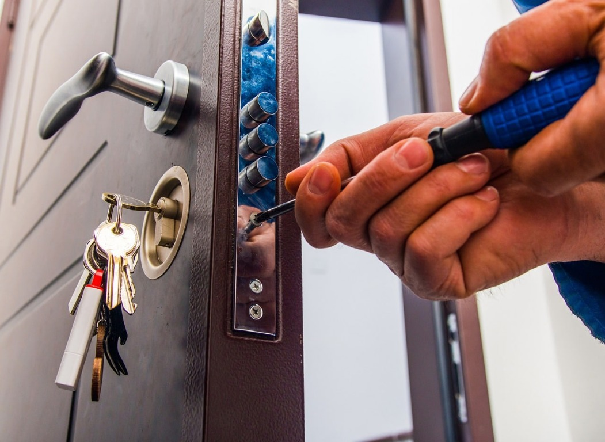
Bahçelievler ve yakın mahallelerde kapı açma
Bahçelievler, Şirinevler, Soğanlı, Yenibosna, Hürriyet ve çevre mahallelerde ev kapısı açma ve iş yeri kapısı açma ihtiyacınız için bize ulaşabilirsiniz. Servis zamanı ve adresinize ulaşım bilgisi, görüşme sırasında netleştirilir.
Kapınız kapalı kaldığında ne olduğunu kısaca anlatın; size uygun hizmet ve süreç hakkında bilgi verelim.
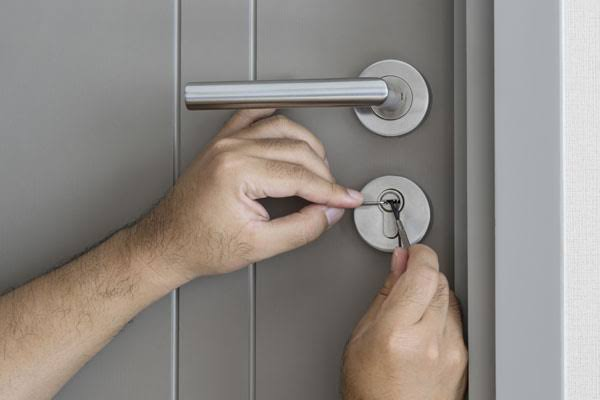
Kapı açma hizmeti: Bahçelievler çilingir, acil çilingir, kilitli kapı açma, ev kapısı açma, iş yeri kapısı açma, anahtar içeride kaldı, kilit arızası, Şirinevler çilingir, Soğanlı çilingir, Yenibosna çilingir.
Kilit arızasında önce doğru tespit
Anahtar zor dönüyor, kilit takılıyor ya da kapı düzgün kapanmıyor mu? Kilit arızasının kaynağı her zaman aynı olmayabilir. Bahçelievler kilit tamiri hizmetimizde kilidi ve kapının çalışma şeklini kontrol ederek onarım mı yoksa parça değişimi mi gerektiğini belirliyoruz.
İşlem öncesi yapılacak müdahaleyi ve seçenekleri sizinle konuşuyor, ihtiyacınıza uygun çözüm için birlikte karar veriyoruz.
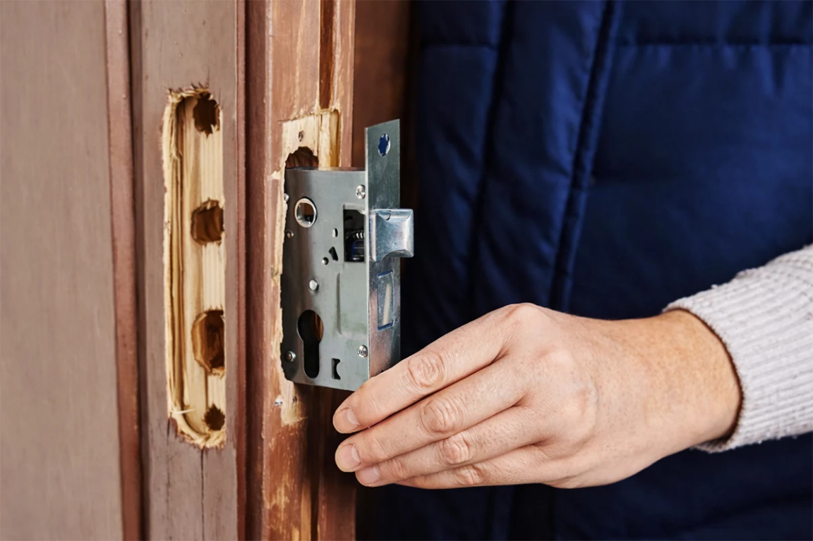
Yıpranmış veya arızalı kilitlerin değişimi
Kilit çok yıpranmışsa, mekanizması hasar gördüyse veya onarım yeterli olmayacaksa kilit değişimi gündeme gelebilir. Kapının yapısına ve mevcut kilit sistemine uygun parçayı belirleyip değişim sürecini anlaşılır şekilde aktarıyoruz.
Ev kapısı kilit değişimi, apartman kapısı kilidi ve iş yeri kilit yenileme ihtiyaçlarınızda uygun seçenekleri öğrenmek için bizimle iletişime geçebilirsiniz.
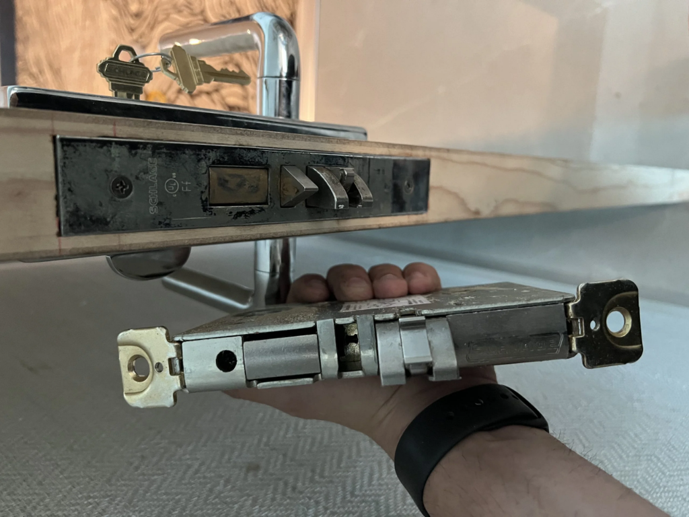
Kapı ve kilit uyumuna dikkat
Her kilit her kapıya uygun değildir. Göbek veya kilit değişiminde ölçü, kapı tipi ve mevcut mekanizma dikkate alınır. Doğru parçanın seçilmesi, kilidin rahat çalışmasına ve kapının güvenli biçimde kapanmasına yardımcı olur.
Gerekli görülürse montaj sırasında kapı kolu ve kilit karşılığı da kontrol edilerek sorunun kaynağı birlikte değerlendirilir.
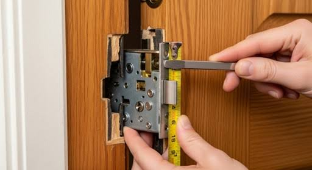
Bahçelievler ve çevresinde kilit desteği
Bahçelievler, Şirinevler, Soğanlı, Yenibosna, Hürriyet ve çevre mahallelerde kapı kilidi tamiri, kilit göbeği değişimi ve kilit yenileme için bize ulaşabilirsiniz. Servis zamanı ve işlem seçenekleri, adresiniz ve ihtiyacınız konuşularak netleştirilir.
Kilitteki sorunu kısaca tarif edin; onarım ya da değişim için izlenebilecek yol hakkında bilgi verelim.
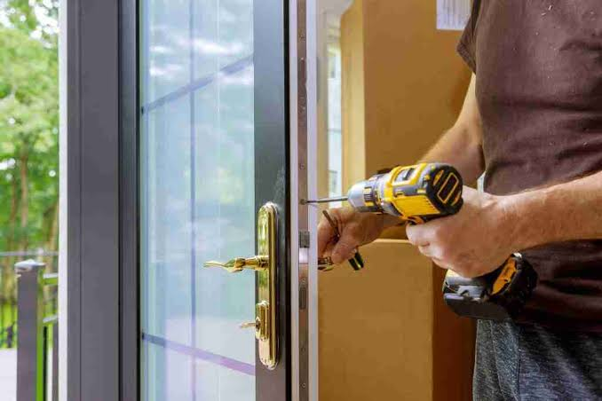
Kilit hizmetleri: Bahçelievler kilit değişimi, kilit tamiri, kapı kilidi onarımı, kilit göbeği değişimi, barel değişimi, kapı kilidi yenileme, arızalı kilit, Şirinevler çilingir, Soğanlı çilingir, Yenibosna çilingir.
Yedek anahtar, ihtiyaç anında elinizin altında
Ev veya iş yeri anahtarınız için yedek hazırlatmak, anahtar kaybolduğunda ya da aile bireylerinin ayrı anahtara ihtiyacı olduğunda işleri kolaylaştırır. Bahçelievler anahtar kopyalama hizmetimizde mevcut anahtarınızı inceliyor, uygun anahtar taslağıyla çoğaltma yapıyoruz.
Günlük kullanım için yedek anahtar veya birden fazla anahtar kopyası ihtiyacınızı bize iletebilirsiniz.
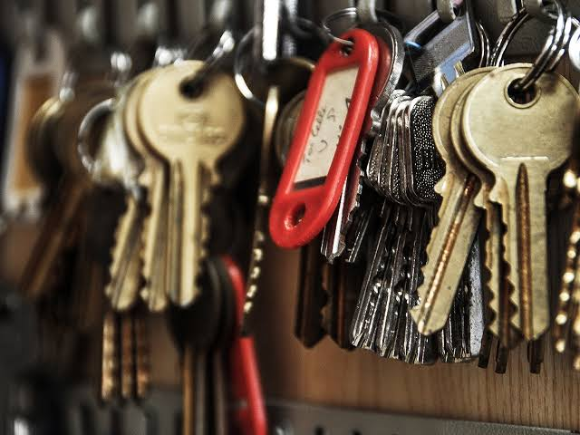
Hassas kesim, rahat kullanım
Anahtarın kilitte rahat çalışması için kesim ve ölçü uyumu önemlidir. Anahtar kopyalama sırasında örnek anahtarı ve anahtarın türünü kontrol ederek uygun kesim işlemini yapıyoruz.
Kopyalama sonrasında anahtarın genel uyumunu da gözden geçiriyor; aşınmış ya da hasarlı anahtarlarda çoğaltmanın mümkün olup olmadığını önceden değerlendiriyoruz.
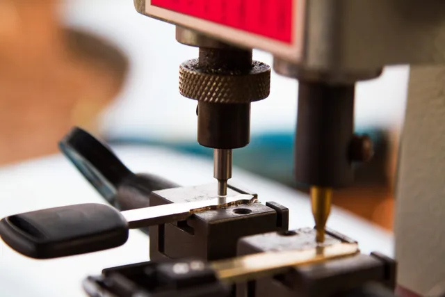
Ev, iş yeri ve farklı anahtar türleri
Ev kapısı ve iş yeri anahtarlarının yanı sıra uygun anahtar türlerinde yedek anahtar ve anahtar çoğaltma desteği sunuyoruz. Anahtarınız özel bir modele sahipse, işlem öncesinde türünü kontrol edip kopyalama olanağı hakkında bilgi veriyoruz.
Bahçelievler, Şirinevler, Soğanlı, Yenibosna ve çevresinde anahtar kopyalatmak için telefonla bize ulaşabilirsiniz.
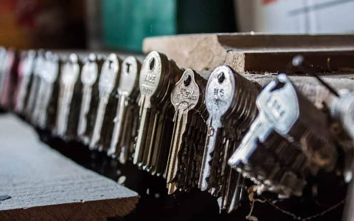
Anahtar kopyalama: Bahçelievler anahtar kopyalama, yedek anahtar, anahtar çoğaltma, ev anahtarı, iş yeri anahtarı, kırık anahtar yenileme, Şirinevler çilingir, Soğanlı çilingir, Yenibosna çilingir.
Aracınıza uygun yedek oto anahtar
Araç anahtarınızı kaybetmeden yedek hazırlatmak, beklenmedik durumlarda işinizi kolaylaştırabilir. Bahçelievler oto anahtar hizmetimizde araç marka ve modelini, mevcut anahtarın türünü ve ihtiyacınızı öğrenerek uygun anahtar seçenekleri hakkında bilgi veriyoruz.
Yedek oto anahtar veya yeni araç anahtarı ihtiyacınız için aracınızın bilgileriyle bize ulaşabilirsiniz.
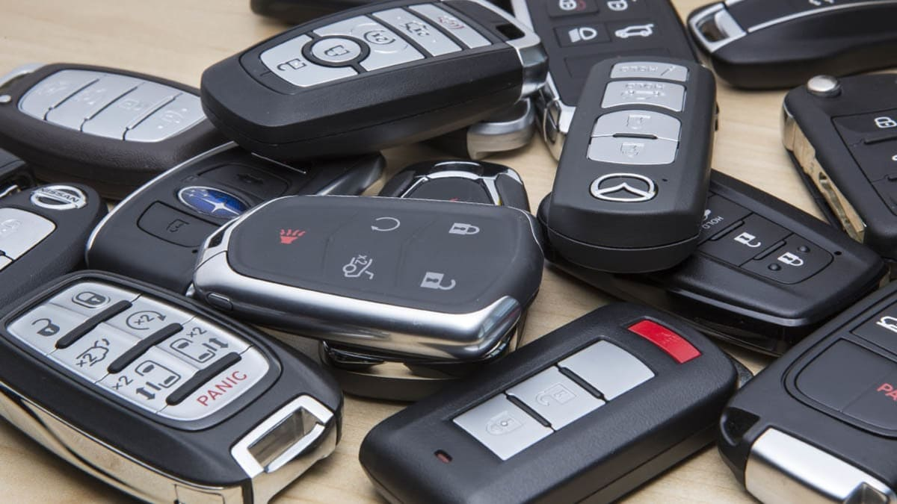
Immobilizer anahtar ve kumanda çözümleri
Birçok araçta anahtarın mekanik kısmının yanında immobilizer çipi veya uzaktan kumanda özellikleri bulunur. Aracınızın sistemine göre oto anahtar kopyalama ve kumanda eşleştirme imkânını işlem öncesinde değerlendiriyoruz.
Her marka ve modeldeki işlemler farklı olabileceğinden, araç bilgilerinizi paylaşarak yapılabilecek işlemler hakkında bilgi alabilirsiniz.
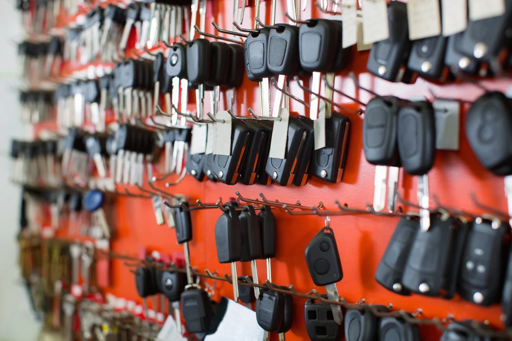
Oto kumanda ve anahtar bakımı
Araç kumandası çalışmıyorsa pil, tuş veya kumanda gövdesiyle ilgili bir sorun olabilir. Kumanda arızasında önce belirtileri ve kumanda tipini değerlendiriyor, uygun çözüm hakkında sizi bilgilendiriyoruz.
Kumandanızın çalışmama nedenini ve araç modelini paylaşmanız, ihtiyacınıza uygun desteği belirlememize yardımcı olur.
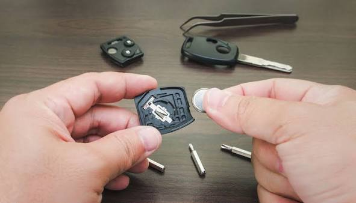
Bahçelievler ve çevresinde oto anahtar desteği
Bahçelievler, Şirinevler, Soğanlı, Yenibosna, Hürriyet ve çevre mahallelerde yedek araç anahtarı, oto anahtar kopyalama ve araç kumandası ihtiyaçlarınız için bize ulaşabilirsiniz.
Araç anahtarı kaybolduysa veya yedeğe ihtiyacınız varsa marka ve model bilginizi iletin; hizmet ve müsaitlik hakkında bilgi verelim.
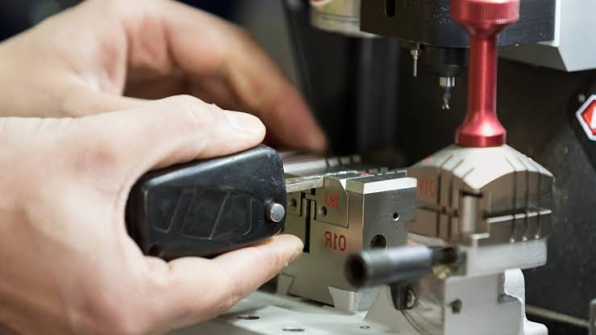
Oto anahtar hizmetleri: Bahçelievler oto anahtar, yedek araç anahtarı, oto anahtar kopyalama, immobilizer anahtar, araç anahtarı kayıp, oto kumanda, araç kumandası eşleştirme, Şirinevler oto anahtar, Yenibosna çilingir.
Kepenk kumandanız için pratik çözümler
Mağaza ya da iş yeri kepenk kumandanız kaybolduysa, çalışmıyorsa veya yedeğe ihtiyaç duyuyorsanız, kumandanın modelini ve kepenk alıcısının uyumunu kontrol ediyoruz. Bahçelievler kepenk kumandası hizmetimizde ihtiyacınıza uygun seçenekler hakkında bilgi veriyoruz.
Kepenk ve mevcut kumanda hakkında birkaç bilgi paylaşmanız, doğru çözümü belirlememize yardımcı olur.
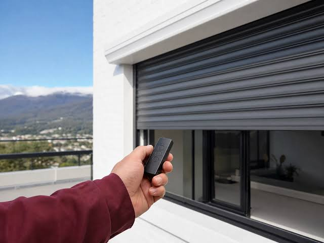
Arızalı kumanda ve yedek ihtiyacı
Kumanda tepki vermiyorsa sorun pil, tuşlar, kumanda ya da alıcı kaynaklı olabilir. Önce belirtileri ve kumanda tipini değerlendiriyor; onarım, yeni kumanda veya yedek hazırlama seçenekleri hakkında sizi bilgilendiriyoruz.
Her kepenk sistemi farklı olabileceğinden, uyumluluk kontrolünü yapmadan yeni kumanda seçmiyoruz.
Kumanda tanıtımı ve eşleştirme
Yeni veya yedek kumandanın kepenk alıcısıyla çalışması için sisteme uygun tanıtım ve eşleştirme gerekebilir. İşlem, kullanılan motor ve alıcının marka-modeline göre değişir; mevcut sisteme uygun yöntem hakkında önceden bilgi veriyoruz.
İşlem öncesi kumanda ve alıcı bilgilerini paylaşarak yapılabilecek eşleştirme desteğini sorabilirsiniz.
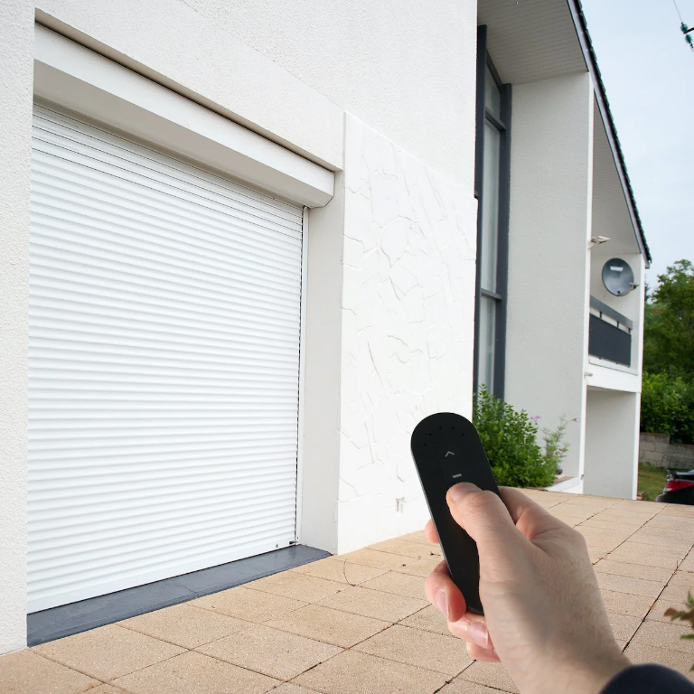
Bahçelievler ve çevresinde kepenk desteği
Bahçelievler, Şirinevler, Soğanlı, Yenibosna ve çevresindeki mağaza ve iş yerleri için kepenk kumandası, kumanda kopyalama ve yedek kumanda ihtiyaçlarında bize ulaşabilirsiniz.
Kumanda arızasını ve kepenk sisteminizin bilgilerini paylaşın; servis ve müsaitlik hakkında bilgi verelim.
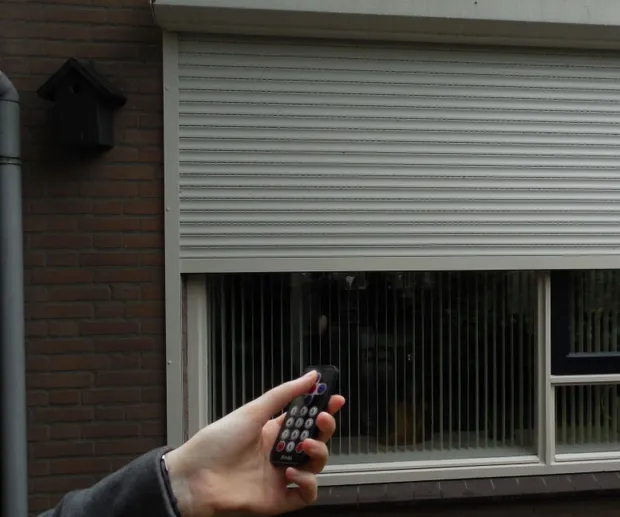
Kepenk kumandası: Bahçelievler kepenk kumandası, kepenk kumanda tamiri, kepenk kumandası kopyalama, yedek kepenk kumandası, kumanda tanıtma, kepenk kumanda eşleştirme, mağaza kepenk kumandası, Şirinevler çilingir, Yenibosna çilingir.
Garaj ve otopark kumandası desteği
Apartman garajı, site otoparkı veya müstakil garaj kapısı için kumandanız kaybolduysa ya da yedek gerekiyorsa mevcut kumandanın modelini ve alıcı sistemini kontrol ediyoruz. Bahçelievler garaj kumandası hizmetimizde sisteminizle uyumlu seçenekleri değerlendiriyoruz.
Kumandanın üzerindeki marka-model bilgisini ve kapının türünü paylaşmanız uygun desteği belirlememize yardımcı olur.
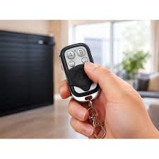
Yedek kumanda ve eşleştirme
Yeni veya yedek kumandanın garaj kapısıyla çalışması için alıcıya tanıtılması gerekebilir. Eşleştirme işlemi kullanılan motor ve alıcının marka-modeline göre değişir; sistem bilgilerini kontrol ederek işlem seçenekleri hakkında bilgi veriyoruz.
Apartman veya site otoparkı kumandalarında yönetim ya da sistem yetkilisinin onayı gerekebilir. İşlem öncesi bu gerekliliği de göz önünde bulundurun.
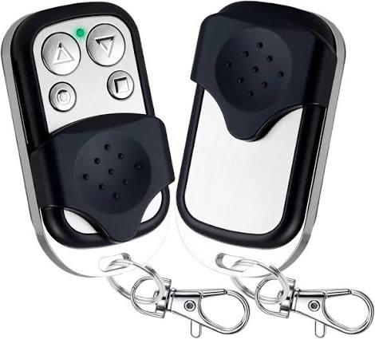
Çalışmayan garaj kumandası
Kumanda kapıyı açmıyor veya sinyali aralıklı iletiyorsa sorun pil, tuş, kumanda ya da alıcı kaynaklı olabilir. Belirtiyi ve kumanda tipini inceleyerek pil değişimi, arıza tespiti veya kumanda yenileme seçeneklerini değerlendiriyoruz.
Sorunun ne zaman başladığını ve kumandanın durumunu paylaşarak destek alabilirsiniz.
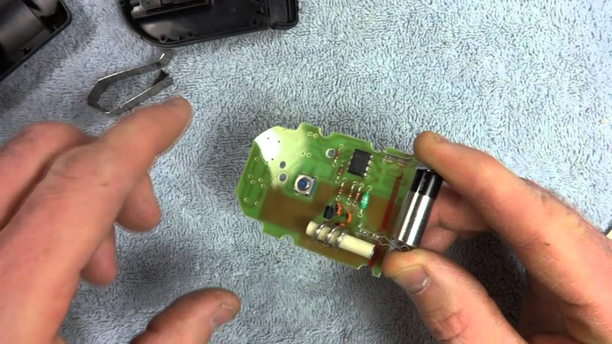
Bahçelievler ve çevresinde garaj kumandası
Bahçelievler, Şirinevler, Soğanlı, Yenibosna ve çevresinde apartman, site, otopark ve müstakil garaj kapıları için kumanda ve yedek kumanda desteği sunuyoruz. Servis ve müsaitlik bilgisi için bize ulaşabilirsiniz.
Kumanda modelini ve garaj kapısı sistemini anlatın; size uygun hizmet seçeneklerini paylaşalım.
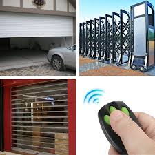
Garaj kumandası: Bahçelievler garaj kumandası, garaj kapısı kumandası, otopark kumandası, site kumandası, yedek garaj kumandası, garaj kumandası tanıtma, kumanda eşleştirme, garaj kumandası tamiri, Şirinevler çilingir, Yenibosna çilingir.
Çelik kasa sorunlarında güvenli destek
Kasa anahtarının kaybolması, şifrenin unutulması veya kilidin çalışmaması beklenmedik bir durum olabilir. Bahçelievler çelik kasa hizmetimizde kasa türünü ve yaşanan sorunu öğrenerek uygun müdahale seçenekleri hakkında ön bilgi veriyoruz.
Kasa marka-modelini ve mekanik ya da elektronik kilit türünü paylaşmanız değerlendirmeyi kolaylaştırır. İşlem öncesi süreci ve seçenekleri sizinle konuşuyoruz.
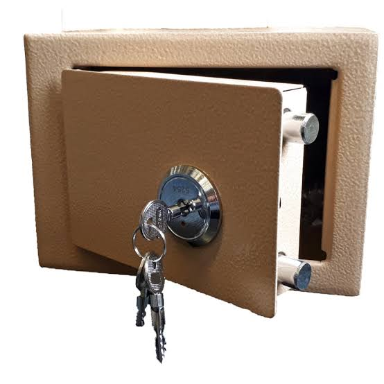
Anahtarlı kasa kilidi ve mekanizma
Anahtar dönmüyor, kilit takılıyor ya da kasa açma-kapama sırasında zorlanıyorsa mekanizma kontrolü gerekebilir. Anahtarlı kasa kilitlerinde arızanın niteliğini değerlendirip onarım veya kilit değişimi seçeneklerini açıklıyoruz.
Kasanın içeriğine ve güvenlik düzenine özen göstererek, işlem için gerekli bilgilendirmeyi önceden yapıyoruz.
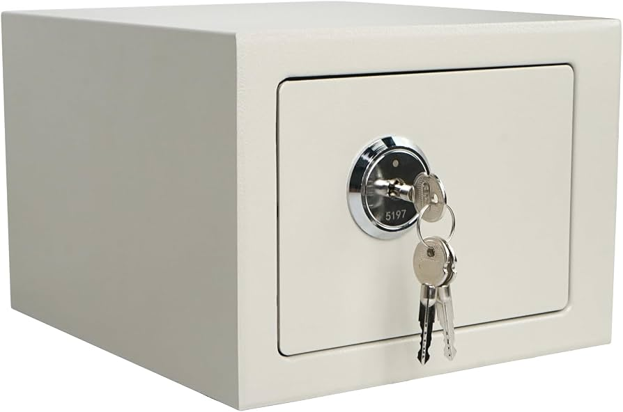
Şifreli ve elektronik kasa çözümleri
Şifreli kasalarda tuş takımı, elektronik kilit veya güç kaynağıyla ilgili sorunlar yaşanabilir. Kasanın modeline ve kilit tipine göre arıza tespiti, şifre mekanizması ya da kilit yenileme seçenekleri değerlendirilebilir.
Elektronik ve mekanik sistemler farklı yöntemler gerektirdiği için, model bilgisini paylaşıp işlem öncesinde uygun desteği teyit edin.
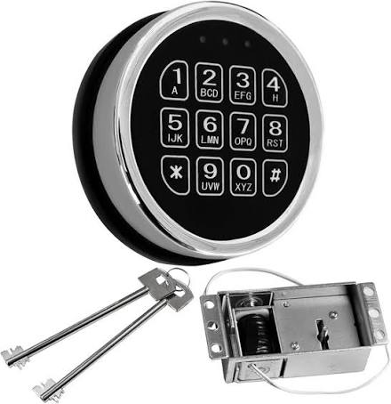
Kasa kilidi ve kullanım ihtiyaçları
Ev, ofis ve iş yerlerinde kullanılan kasaların kilit ve şifre sistemleri modele göre değişir. Kasa kilidi değişimi veya mekanik şifre kilidiyle ilgili ihtiyaçlarınızda mevcut sistemi inceleyip seçenekleri sizinle değerlendiriyoruz.
Amacımız, ihtiyaca uygun ve kasa sisteminin özelliklerine göre planlanmış bir hizmet sunmak.
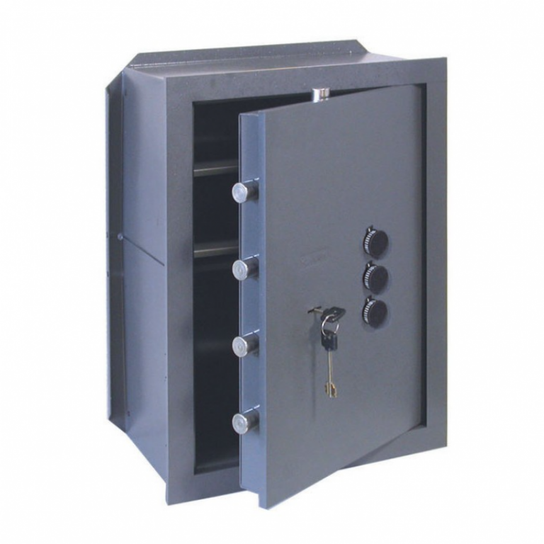
Bahçelievler ve çevresinde çelik kasa
Bahçelievler, Şirinevler, Soğanlı, Yenibosna ve çevresinde kasa anahtarı kaybı, şifre unutulması, kasa kilidi arızası ve kilit değişimi için bize ulaşabilirsiniz.
Kasa türünü ve sorununuzu kısaca anlatın; servis, işlem seçenekleri ve müsaitlik hakkında bilgi verelim.
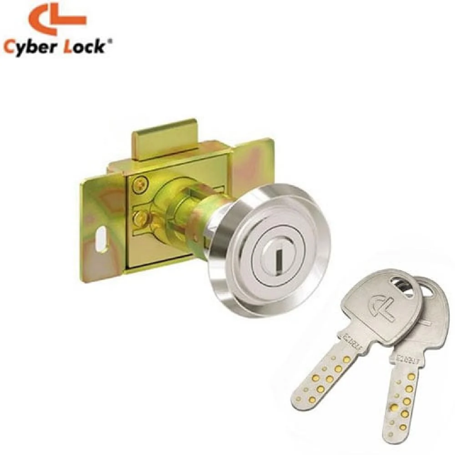
Çelik kasa hizmetleri: Bahçelievler çelik kasa, çelik kasa açma, kasa kilidi tamiri, kasa kilidi değişimi, kasa anahtarı kayıp, şifreli kasa, elektronik kasa kilidi, mekanik şifre kilidi, Şirinevler çilingir, Yenibosna çilingir.